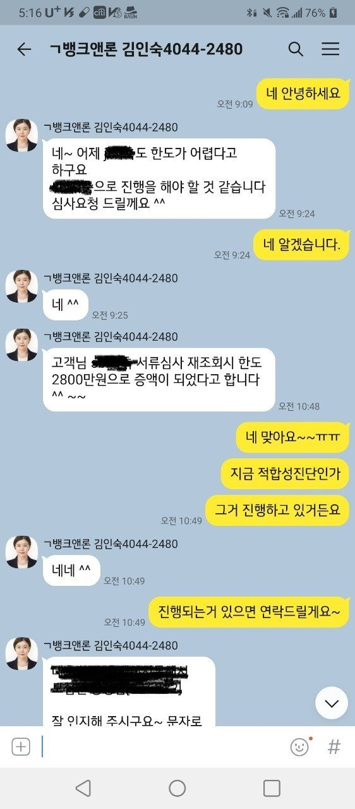
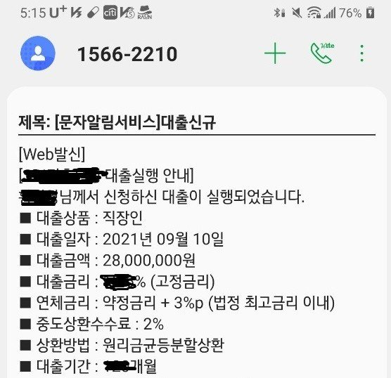

[직장인대출] 직장인대출 성공후기-김인숙 과장님 감사합니다.


상태 : 직장인
기대출 : 자동차담보대출,대부 포함 총 6건 약 1억천만원
신용카드 : 1년 이상 사용 중
자차, 집 : 자차 유, 자가 무
필요금액 : 1000~1500만원
4대보험 : 4대보험 가입 유
추정소득 : 연봉 5100만원(심사 시 5800만원으로 책정)
기대출이 1억이 넘는 상황에서 생활자금으로 급하게 1000만원~1500만원이 필요한 상황이었습니다.
총 6건의 대출 중에 대부도 포함하고 있어서 가능하면 낮은 금리로 대환도 하고 싶은 마음이었습니다.
제가 개인적으로 알아보는 것보다 뱅크앤론을 통해서 알아보면 확률이 더 높다는 것을 너무나 잘 알고
있기 때문에 다시 한번 도움을 요청했는데 생각보다 더 높은 한도로 대출 실행이 되었네요.
어제 오후에 김인숙 과장님 통해서 처음 3군데 알아보던 곳 중 1곳에서 1800만원 한도가 발생했습니다.
그런데 금리가 너무 높아 아쉽다고 하시면서 3군데만 더 알아보고 실행 하자고 하시더라고요...
아쉽게도 추가적으로 알아본 곳들에서는 한도가 발생하지 않았습니다.
다행히 어제 1800만원 한도가 나온 곳에서 심사하던 중에 추가 한도가 발생하여 총 2800만원을
대출 받을 수 있었습니다. 기대출 중 대부도 상환하면서 대출건수도 줄일 수 있어서 더 기쁘네요.
다시한번 도움주신 김인숙 과장님께 감사함을 전합니다.